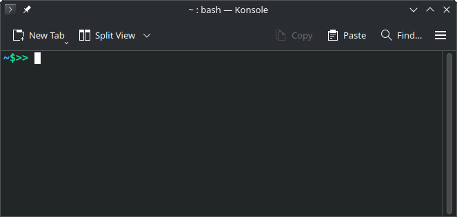

Automate your Work
September 17, 2025
The shell is like a chat with your computer. It helps you to interact with your computer using text commands.
The shell is a very productive programming environments. Once mastered, you can automate your work.
Most commands follow a similar convention.
We can modify commands by setting various flags (also known as options, parameters, or, most frequently, arguments)
Print working directory pwd
list directory’s content ls
list directory content in more details and in list form ls -l
Let’s make the output more human readable
To make life easier we can define an alias.
Let’s dive into a directory via change directory cd
Let’s test error handling of cd
Let’s move around with via cd
using the --help option
using man COMMAND
Let’s create a new folder with make directory
touch: create a file.
cp: copy the file.
mv: rename/move a file.
rm: remove a file
rm: remove a folder
create several folders and files
The ? wildcard matches one character. The * wildcard matches zero or more characters.
going from command to command (next) ;
going from command to command if successful via &&
You’ve got a bash history
You can access it via !NUM
You can access your last command via
> or >> is used for redirecting either to a command or a file.
Let’s print something to the shell
Two options overwrite (create) > or append >>.
How to view the content of files
cat: concatenate, it is not an editor => go for vim or nano
find, xargs and grepLet’s find all files with find
Find all markdown files
Let’s get some more information via ls -l using xargs
Let’s add a file with spaces into the mix,
What happend?
Let’s find all *.md files which contain the word “Hallo”, using grep -l.
Let’s get more information about those file via ls -l
We have learned:
<<< Everything is considered to be a String >>>
Strings and Integers
$> var=1
$> echo $var
$> var="Hallo world!"
$> echo "$var"
$> echo '$var'
$> var1="Hallo"
$> var2="world!"
$> varN="$var1 $var2"
$> echo $varNArrays
Access all elements
Number of elements via #
You can access elements with integers (stating with 0)
$((...)) is called arithmetic expansion. It can be used for calculations incl. arithmetical conditionals. It is derived from let (Low Execution Time integer).
calculations
conditionals
[[..]] Compound Command + ifGeneral-purpose compound command ([[...]])
It is based on the derivative of the older test command ([...]).
String comparison (ex. ==)
Number testing (ex. -eq)
File testing and boolean operation (-f, -r, &&)
Checking if the folder is empty.
Going through elements in an Array. Let’s give it a try with:
Not working, this is much better:
Using a Counter
Let’s make it better
are like mini bash scripts
Let’s create a function from this line
Let’s check if an argument is provided: -z
Result:
$0 .. currently executing command$1..$9 .. argument number 1 to 9$#.. number of arguemts$@ .. all arguments$? .. last exit status$$ .. current pid of the current shell#!/usr/bin/env bash
# SPDX-FileCopyrightText: Copyright (c) 2025 Max Musterman
# SPDX-License-Identifier: MIT
# Name : projectA
# Version : 0.1.0
# Description : Creates basic project layout
# Required : -
#==========#
#== INIT ==#
#==========#
#================#
#== USER INPUT ==#
#================#
#===============#
#== FUNCTIONS ==#
#===============#
#---------------#
function testing {
echo "Here are all my tests."
}
#---------------#
function main {
echo "I am looking for content!"
}
#==========#
#== MAIN ==#
#==========#
testing
mainTask: Create a Project Template
Create two functions:
#!/usr/bin/env bash
# SPDX-FileCopyrightText: Copyright (c) 2025 Max Musterman
# SPDX-License-Identifier: MIT
# Name : foobar
# Version : 0.1.0
# Description : Foo for Bar
# Required : -
# Note : -
#==========#
#== INIT ==#
#==========#
mydirs=(
"a_literature"
"b_geometry"
"c_setup"
"d_calculations"
"e_analysis"
"f_documentation"
)
myfiles=(
"README.md"
)
#================#
#== USER INPUT ==#
#================#
#===============#
#== FUNCTIONS ==#
#===============#
function create_dirs {
local inputdirs=("$@")
for dir in ${inputdirs[@]}
do
mkdir $dir
done
}
#---------------#
function create_files {
local inputfiles=("$@")
for file in ${inputfiles[@]}
do
touch $file
done
}
#---------------#
function test_empty_dir {
if [[ ! -z "$(ls -A .)" ]]; then
echo "Folder not empty! Could not create project!"
exit 1
fi
}
#---------------#
function testing {
test_empty_dir
}
#---------------#
function main {
create_dirs ${mydirs[@]}
create_files ${myfiles[@]}
ls -l
}
#==========#
#== MAIN ==#
#==========#
testing
main…